TableOfContents
Here’s the real stuff ;-)
You’ll be learned here how you can use the various modules in !MayaVi2.
Note: Some modules can’t be added for any type of data set. Some work only for !StructuredGrid or !StructuredPoints for example (see http://www.vtk.org/pdf/file-formats.pdf for more information about VTK data type). It will be specified each time is needed.
Note2: In the !MayaVi2 tree view, the “Main Modules” (called “Modules”) have been separated from the “Basic Modules” loading the !ModuleManager. Of coutse, you can load all your modules and filters without using the !ModuleManager.
The simpliest (and easiest, but not the most impressive ;-) ) way to display 3D data is doubtless to slice it on some planes, normal to Ox, Oy or Oz axis, or oblique.
One of the modules you can use to do this is called !ScalarCutPlane. It works for any data.
Note: As the !ImagePlaneWidget module also display scalars data on a plane (but it does not “cut” data), please see [:Cookbook/MayaVi/Examples: Example with a 3D array as numerical source (numeric_source.py)] or [:Cookbook/MayaVi/Examples: Example using ImagePlaneWidget Module (test.py)] to get more information on how you can use this module.
You have to set several parameters:
Thus, you have to type:
from enthought.mayavi.modules.scalar_cut_plane import ScalarCutPlane
and
scp = ScalarCutPlane() # set scp as ScalarCutPlane() module
script.add_module(scp) # add module to the scene
scp.implicit_plane.normal = (1, 0, 0) # set normal to Ox axis
# set origin to (i=10, j=25, k=25) i.e. integers for a structured grid
scp.implicit_plane.origin = (10, 25, 25)
# set origin to (x=1.0, y=2.5, z=2.5) i.e. reals for unstructured grids
# scp.implicit_plane.origin = (1.0, 2.5, 2.5)
scp.implicit_plane.widget.enabled = False
scp.actor.property.diffuse = 0.0 # set some color properties
scp.actor.property.ambient = 1.0 #
scp.actor.property.opacity = 1.0 #
scp.module_manager.scalar_lut_manager.data_range = [0, 1]
Note that if you enable widget, you will be able to translate (move the mouse to the red frame), change the normal (move the mouse to the grey arrow) of the cutplanes in “real-time” :
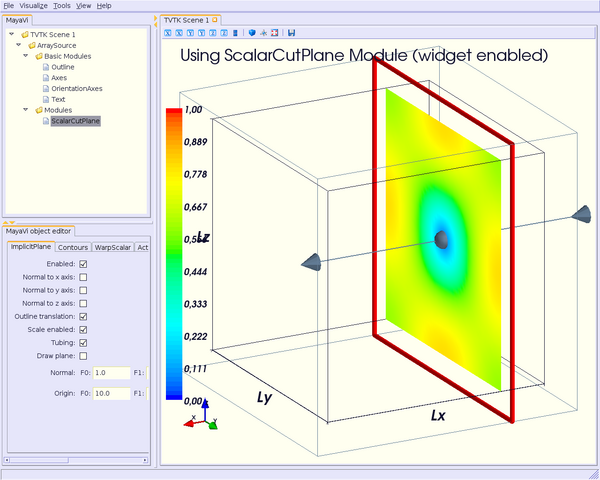You can also display the cutplanes as “warped surfaces”, just adding a few lines, setting the scale factor and the normals to be computed (smoother surface) or not:
scp.enable_warp_scalar = True
scp.compute_normals = True
scp.warp_scalar.filter.scale_factor = 20
Of course, you can add as many cutplanes as you want, oblique or not.
Let’s see now a little more complex example : we want opacity to be set to 0.2 for each cutplane, and contours (#10) for the same cutplanes added. Lines above have been changed as below:
Note: I agree, this is not the best way to write such a code. You can obviously write a method to do the same suff. But this is not the purpose here.
### cutplane #1, normal to Ox, opacity = 0.2, representation = surface
scp = ScalarCutPlane()
script.add_module(scp)
scp.implicit_plane.normal = (1, 0, 0)
scp.implicit_plane.origin = (25, 25, 25)
scp.implicit_plane.widget.enabled = False
scp.actor.property.diffuse = 0.0
scp.actor.property.ambient = 1.0
scp.actor.property.opacity = 0.2
scp.module_manager.scalar_lut_manager.data_range = [0, 1]
### cutplane #2, normal to Oy, opacity = 0.2, representation = surface
scp = ScalarCutPlane()
script.add_module(scp)
scp.implicit_plane.normal = (0, 1, 0)
scp.implicit_plane.origin = (25, 25, 25)
scp.implicit_plane.widget.enabled = False
scp.actor.property.diffuse = 0.0
scp.actor.property.ambient = 1.0
scp.actor.property.opacity = 0.2
scp.module_manager.scalar_lut_manager.data_range = [0, 1]
### cutplane #3, normal to Oz, opacity = 0.2, representation = surface
scp = ScalarCutPlane()
script.add_module(scp)
scp.implicit_plane.normal = (0, 0, 1)
scp.implicit_plane.origin = (25, 25, 25)
scp.implicit_plane.widget.enabled = False
scp.actor.property.diffuse = 0.0
scp.actor.property.ambient = 1.0
scp.actor.property.opacity = 0.2
scp.module_manager.scalar_lut_manager.data_range = [0, 1]
### cutplane #4, normal to Ox, representation = contour
scp = ScalarCutPlane()
script.add_module(scp)
scp.implicit_plane.normal = (1, 0, 0)
scp.implicit_plane.origin = (25, 25, 25)
scp.implicit_plane.widget.enabled = False
scp.actor.property.diffuse = 0.0
scp.actor.property.ambient = 1.0
scp.enable_contours = True
scp.contour.number_of_contours = 10
scp.contour.minimum_contour, scp.contour.maximum_contour = [0, 1]
scp.module_manager.scalar_lut_manager.data_range = [0, 1]
### cutplane #5, normal to Oy, representation = contour
scp = ScalarCutPlane()
script.add_module(scp)
scp.implicit_plane.normal = (0, 1, 0)
scp.implicit_plane.origin = (25, 25, 25)
scp.implicit_plane.widget.enabled = False
scp.actor.property.diffuse = 0.0
scp.actor.property.ambient = 1.0
scp.enable_contours = True
scp.contour.number_of_contours = 10
scp.contour.minimum_contour, scp.contour.maximum_contour = [0, 1]
scp.module_manager.scalar_lut_manager.data_range = [0, 1]
### cutplane #6, normal to Oz, representation = contour
scp = ScalarCutPlane()
script.add_module(scp)
scp.implicit_plane.normal = (0, 0, 1)
scp.implicit_plane.origin = (25, 25, 25)
scp.implicit_plane.widget.enabled = False
scp.actor.property.diffuse = 0.0
scp.actor.property.ambient = 1.0
scp.enable_contours = True
scp.contour.number_of_contours = 10
scp.contour.minimum_contour, scp.contour.maximum_contour = [0, 1]
scp.module_manager.scalar_lut_manager.data_range = [0, 1]
which looks like this:
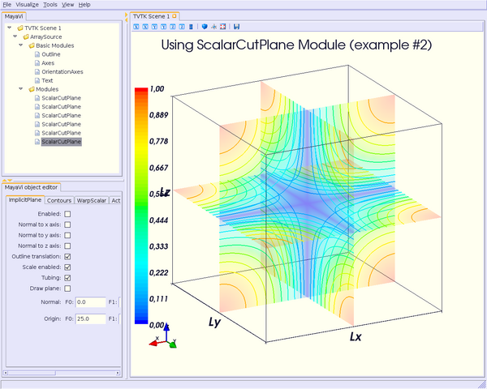Another module that slices grid is called !SliceUnstructuredGrid. As it is called, it should work only for unstructured grids. But, because it has been tested on a structured grid, even !MayaVi2 complains about it with a warning message, it “works” even for structured grid (happily for our example ;-) )
In fact, its interest is not really slicing grid, but even more showing the structure of your mesh, i.e. your mesh cells. Thus you can see if there is not any problem (holes, etc.).
from enthought.mayavi.modules.slice_unstructured_grid import SliceUnstructuredGr
id
and
sug = SliceUnstructuredGrid()
script.add_module(sug)
# unstructured grid so origin coordinates are reals
sug.implicit_plane.origin = (25., 25., 25.)
sug.implicit_plane.normal = (1, 1, 1)
sug.implicit_plane.widget.enabled = False
sug.extract_geometry.extract_boundary_cells = False
sug.extract_geometry.extract_inside = True
sug.extract_geometry.extract_only_boundary_cells = False
sug.geom_filter.cell_clipping = False
sug.geom_filter.extent_clipping = False
sug.geom_filter.merging = True
sug.geom_filter.point_clipping = False
sug.actor.property.representation = 'wireframe'
sug.actor.property.diffuse = 0.0
sug.actor.property.ambient = 1.0
sug.actor.property.opacity = 1.0
sug.module_manager.scalar_lut_manager.data_range = [0, 1]
The scene should look like this:
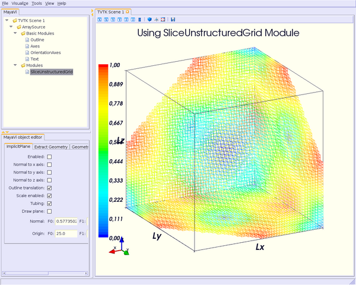Using !GridPlane module cuts also your grid, but quite differently from !ScalarCutPlane module. You can’t get normal plane only along Ox, Oy and Oz axis, and it works only for structured grids. But unlike !ScalarCutPlane module, which always cuts your mesh in a plane, !GridPlane cuts through your mesh: if it’s a conformal mesh, the cut won’t be a plane, but something following the curvature of your mesh.
The !StructuredGridOutline module does the same as Outline module, but for conformal mesh.
To illustrate how can we use these modules, let’s consider a example provided in the VTKData directory, combxyz.bin & combq.bin files (Plot3D format) from the tarball vtkdata-5.0.3.tar.gz you can download here.
So, type:
from enthought.mayavi.modules.strucured_grid_outline import StructuredGridOutlin
e
from enthought.mayavi.modules.grid_plane import GridPlane
# to load Plot3D files format
from enthought.mayavi.sources.plot3d_reader import PLOT3DReader
and
src = PLOT3DReader()
src.initialize('combxyz.bin', 'combq.bin')
script.add_source(src)
sgo = StructuredGridOutline()
script.add_module(sgo)
gp = GridPlane()
script.add_module(gp)
gp.grid_plane.axis = 'x'
gp.grid_plane.position = 2
gp.actor.mapper.scalar_visibility = True
gp.actor.property.representation = 'surface'
gp.actor.property.diffuse = 0.0
gp.actor.property.ambient = 1.0
gp.actor.property.opacity = 1
gp = GridPlane()
script.add_module(gp)
gp.grid_plane.axis = 'x'
gp.grid_plane.position = 25
gp.actor.mapper.scalar_visibility = True
gp.actor.property.representation = 'surface'
gp.actor.property.diffuse = 0.0
gp.actor.property.ambient = 1.0
gp.actor.property.opacity = 1
gp = GridPlane()
script.add_module(gp)
gp.grid_plane.axis = 'x'
gp.grid_plane.position = 55
gp.actor.mapper.scalar_visibility = True
gp.actor.property.representation = 'surface'
gp.actor.property.diffuse = 0.0
gp.actor.property.ambient = 1.0
gp.actor.property.opacity = 1
The scene is rendered as this:
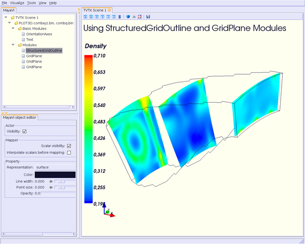Others modules are Surface and !IsoSurface. These modules work with any data.
Surface module does the same as !IsoSurface but displays, automatically, several isosurfaces for a given number of values in a given range.
In fact, you can get the same result with !IsoSurface module, but you will have to set each isovalue.
When several isosurfaces are displayed, using Surface or !IsoSurface module, you should set opacity to a value below 1, in order to see all isosurfaces.
Using Surface module is straightforward:
from enthought.mayavi.modules.surface import Surface
then
s = Surface()
s.enable_contours = True # we want contours enabled
s.contour.auto_contours = True # we want isovalues automatically well-defined
s.contour.number_of_contours = 10 # self-explanatory ;-)
s.actor.property.opacity = 0.2
script.add_module(s)
s.contour.minimum_contour = 0
s.contour.maximum_contour = 1
s.module_manager.scalar_lut_manager.data_range = [0, 1]
The scene should look like this:
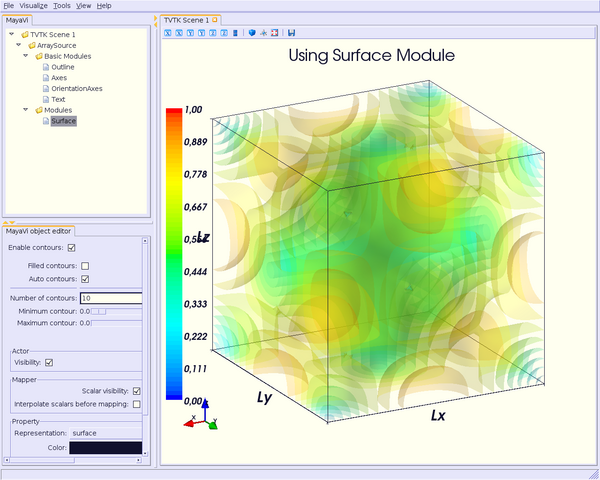Using the !IsoSurface module is not more difficult. As an example, say that we want the same result as the Surface module displays.
from enthought.mayavi.modules.iso_surface import IsoSurface
and
isosurf = IsoSurface()
script.add_module(isosurf)
isosurf.contour.contours = [0.1111, 0.2222, 0.3333, 0.4444, 0.5555, 0.6666, 0.77
77, 0.8888]
isosurf.compute_normals = True
isosurf.actor.property.opacity = 0.2
isosurf.module_manager.scalar_lut_manager.data_range = [0, 1]
This yelds the same scene as previous, of course, but now, you can control each isovalue separately.
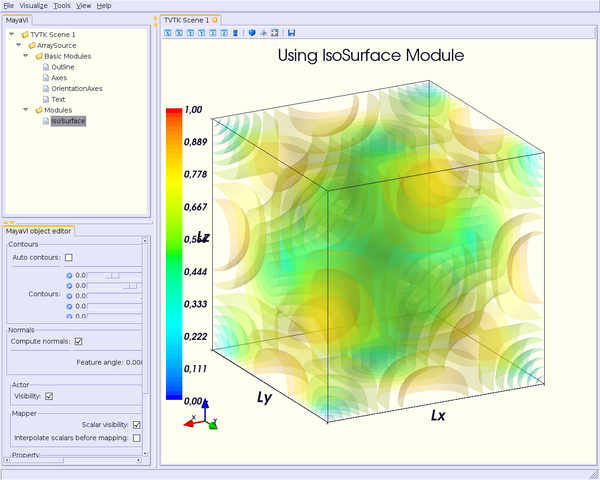The funny part is that you can set the minimum/maximum contour for Surface or Contours for !IsoSurface in “real-time”, moving the slide-bar. This is a very useful feature. And can render very nice “dynamic” scene ! :-)
It is still quite experimental for me (you can set a lot of parameters), so this section will be very short ;-)
Instead of viewing surfaces, data are displayed in the whole volume.
Begin to import the required module:
from enthought.mayavi.modules.volume import Volume
and then, add it to the source as usual:
v = Volume()
script.add_module(v)
v.lut_manager.show_scalar_bar = True
v.lut_manager.scalar_bar.orientation = 'vertical'
v.lut_manager.scalar_bar.width = 0.1
v.lut_manager.scalar_bar.height = 0.8
v.lut_manager.scalar_bar.position = (0.01, 0.15)
v.lut_manager.scalar_bar.label_text_property.color = fg_color
v.lut_manager.scalar_bar.title_text_property.color = fg_color
v.lut_manager.number_of_labels = 10
v.lut_manager.data_name = ""
Note that the Volume module has a “Color Transfer Function”, which is quite different from the !LookUp Table used by the others modules.
The rendered scene should look like this (thanks to Prabhu to have made the CTF similar to the LUT) :
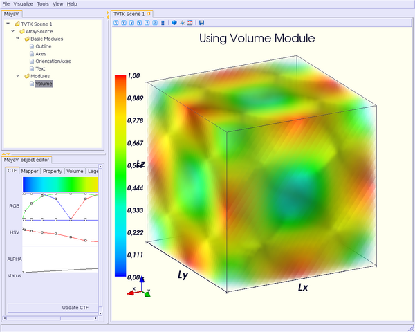Until now, we have only dealt with scalar values. You can also display values as vectors. You can use one of the three following modules:
* Vectors module: scale and color are set by vectors data, i.e. a 3D array vectors field;
* Glyph module: scale and color are set by scalar data;
* !VectorCutPlane module; in this case, vectors are not diplayed in the whole volume, but only on cutplanes, as !ScalarCutPlane module does with scalar values.
You can set several parameters for these modules, in concern with arrows shape, etc.
First, it depends of the number of points in your volume, but you are advised to decimate your data. If you don’t, you should see nothing all but a lot of arrows everywhere, and thus loss the pertinent information. You can choose a randomly, or not, decimation.
Second, you can choose the shape of your vectors, amongst the following list: 2D Glyph or Arrow, Cone, Cylinder, Sphere and Cube 3D vector shapes.
Third, you can set some parameters for the choosen shape. For example, using the Arrow shape, you can set the following properties for the shaft and the tip:
* the shaft radius;
* the shaft resolution (number of polygons);
* the tip length;
* the tip radius;
* the tip resolution;
You can also set the vector position, between “tail”, “centered” and “head”, the scale mode, the color mode, the scale factor (how big your vectors will be displayed), etc.
Let’s see now how one can do this.
First, import the required module.
For Vectors module,
from enthought.mayavi.modules.vectors import Vectors
For Glyph module,
from enthought.mayavi.modules.glyph import Glyph
For !VectorCutPlane module,
from enthought.mayavi.modules.vector_cut_plane import VectorCutPlane
In fact, you will see that these three modules use the same objects and methods. Only default values differ.
For instance, for Vectors module, you can type:
v = Vectors()
script.add_module(v)
v.glyph.mask_input_points = True # we want to decimate our data...
v.glyph.mask_points.on_ratio = 100 # ...by a ratio of 100
v.glyph.mask_points.random_mode = True # I want a randomly decimation
v.glyph.glyph_source = v.glyph.glyph_list[1] # I like ArrowSource ;-)
# following values are the default values: tweak your own !
v.glyph.glyph_source.shaft_radius = 0.03
v.glyph.glyph_source.shaft_resolution = 6
v.glyph.glyph_source.tip_length = 0.35
v.glyph.glyph_source.tip_radius = 0.1
v.glyph.glyph_source.tip_resolution = 6
v.glyph.glyph.scale_factor = 10
v.glyph.glyph_position = 'tail'
v.glyph.scale_mode = 'scale_by_vector'
v.glyph.color_mode = 'color_by_vector'
### if you use Glyph module, here are the default values
# v.glyph.glyph_position = 'center'
# v.glyph.scale_mode = 'scale_by_scalar'
# v.glyph.color_mode = 'color_by_scalar'
If we consider, once again ;-), the same 3D data already shown before, but this time, with vectors instead of scalars data, the scene should look like this:
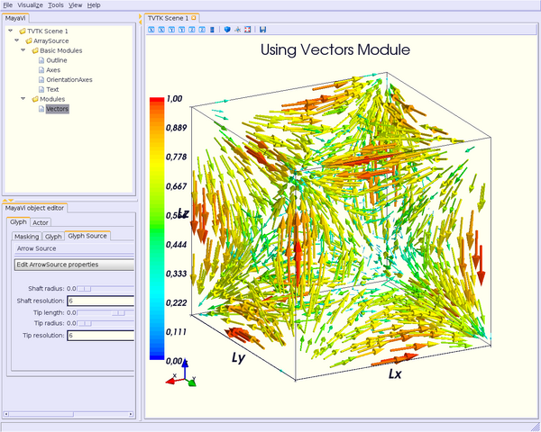For the !VectorCutPlane module, you can set the same properties as above plus the properties of the !ScalarCutPlane module such as implicit_plane.normal, implicit_plane.origin, implicit_plane.widget.enabled, etc:
vcp = VectorCutPlane()
script.add_module(vcp)
vcp.glyph.mask_input_points = True
vcp.glyph.mask_points.on_ratio = 5
vcp.glyph.mask_points.random_mode = False
vcp.glyph.glyph_source = vcp.glyph.glyph_list[1]
vcp.glyph.glyph_source.shaft_radius = 0.03
vcp.glyph.glyph_source.shaft_resolution = 6
vcp.glyph.glyph_source.tip_length = 0.35
vcp.glyph.glyph_source.tip_radius = 0.1
vcp.glyph.glyph_source.tip_resolution = 6
vcp.glyph.glyph.scale_factor = 20
vcp.glyph.glyph_position = 'tail'
vcp.glyph.scale_mode = 'scale_by_vector'
vcp.glyph.color_mode = 'color_by_vector'
vcp.implicit_plane.normal = (1, 0, 0) # set normal to Ox axis
vcp.implicit_plane.origin = (10, 25, 25) # set origin to (i=10, j=25, k=25) for
a structured grid
vcp.implicit_plane.widget.enabled = True
vcp.actor.property.diffuse = 0.0 # set some color properties
vcp.actor.property.ambient = 1.0 #
vcp.actor.property.opacity = 1.0 #
vcp.module_manager.vector_lut_manager.data_range = [0, 1]
This should render this scene:
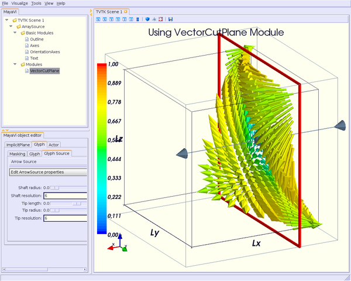You can also warp a cutplane according to the vectors field. To do this, you have to load another module, instead of !VectorCutPlane, called !WarpVectorCutPlane.
Type:
from enthought.mayavi.modules.warp_vector_cut_plane import WarpVectorCutPlane
then
wvcp = WarpVectorCutPlane()
script.add_module(wvcp)
wvcp.implicit_plane.normal = (1, 0, 0) # set normal to Ox axis
wvcp.implicit_plane.origin = (10, 25, 25) # set origin to (i=10, j=25, k=25) for
a structured grid
wvcp.implicit_plane.widget.enabled = True
wvcp.compute_normals = True
wvcp.warp_vector.filter.scale_factor = 10
You should get this (compare to the warped surface with !ScalarCutPlane module):
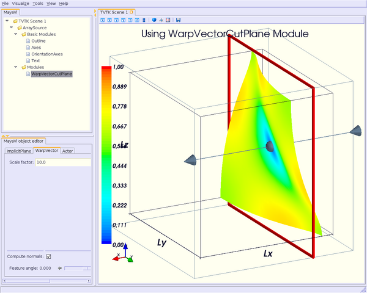Another way to display vectors fields is to use the Streamline module.
We consider here others Plot3D files: postxyz.bin & postq.bin that you can download here. You can find some screenshots using these files on the VTK home page here.
You can set several parameters for this module: for instance, the type of the streamline (tube, ribbon or line) with its properties, and the “seed”.
We also use the !GridPlane module in this example:
Begin to import the required module:
from enthought.mayavi.sources.plot3d_reader import PLOT3DReader
from enthought.mayavi.modules.streamline import Streamline
from enthought.mayavi.modules.grid_plane import GridPlane
In this example, we want streamlines displayed as tubes, with 10 sides, and the seed set to the line seed. We also choose to display the “Kinetic Energy” part of the Plot3D files.
src = PLOT3DReader()
src.initialize('postxyz.bin', 'postq.bin')
src.scalars_name = "kinetic energy"
script.add_source(src)
gp = GridPlane()
script.add_module(gp)
gp.grid_plane.axis = 'x'
gp.actor.mapper.scalar_visibility = True
gp.actor.property.representation = 'surface'
gp.actor.property.diffuse = 0.0
gp.actor.property.ambient = 1.0
gp.actor.property.opacity = 1
gp = GridPlane()
script.add_module(gp)
gp.grid_plane.axis = 'z'
gp.actor.mapper.scalar_visibility = False
gp.actor.property.representation = 'wireframe'
gp.actor.property.diffuse = 0.0
gp.actor.property.ambient = 1.0
gp.actor.property.opacity = 1
strl = Streamline()
script.add_module(strl)
strl.streamline_type = "tube" # tube, ribbon or line
strl.tube_filter.number_of_sides = 10
strl.tube_filter.radius = 0.1
strl.seed.widget = strl.seed.widget_list[1] # [Sphere, Line, Plane, Point]
strl.seed.widget.align = "z_axis" # or "x_axis", "y_axis"
strl.seed.widget.point1 = (-0.7, 0, 0)
strl.seed.widget.point2 = (-0.7, 0, 4.82)
strl.seed.widget.resolution = 10
strl.seed.widget.enabled = False
This should look like:
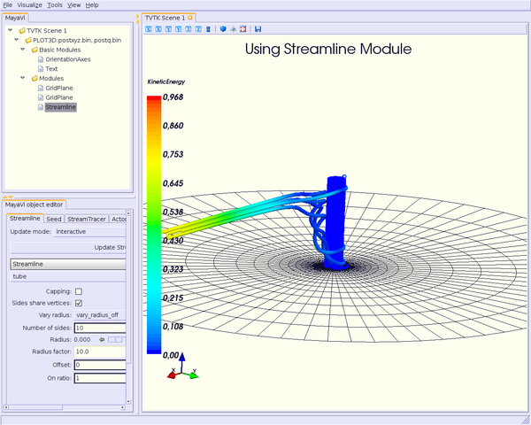Note: you can also see an example of using the Streamline module in [:Cookbook/MayaVi/Examples: Cookbook/MayaVi/Examples].
CategoryCookbook